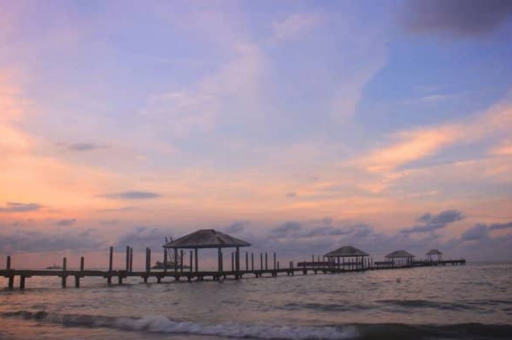
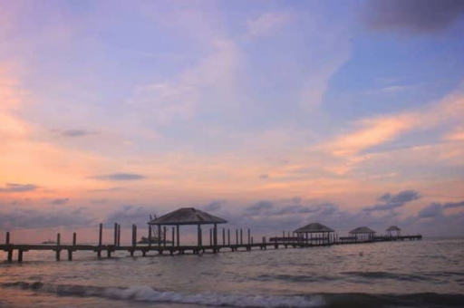
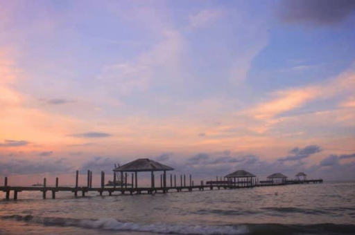

Gallery
 

GUCCI merupakan pemandian air panas yang terletak di lereng Gunung Slamet pada ketinggian antara 1.050 m – 1.250 meter dari permukaan laut, tepatnya di Desa Gucci Kec. Bumijawa Kab. Tegal. suhu udara kawasan ini antara 17 derajat Celcius – 20 derajat Celcius. Sedangkan suhu air panasnya berkisar ± 41 derajat Celcius. Banyak yang menganggap sumber air panas dari gunung api ini memiliki khasiat untuk kesehatan. Pemandian air panas Guci memiliki beberapa kolam pemandian. Kolam-kolam tersebut memiliki suhu yang berbeda-beda mulai dari 30 derajat Celcius hingga 90 derajat Celcius. Kolam-kolam tersebut dikelilingi oleh pepohonan yang rindang sehingga suasananya sangat sejuk dan nyaman, dan terdiri dari Pancuran 5, pancuran 7, pancuran 13. Selain kolam pemandian, di pemandian air panas Guci juga terdapat berbagai fasilitas lainnya, seperti tempat parkir, warung makan, dan toko souvenir. Pemandian air panas Guci merupakan salah satu destinasi wisata favorit di Jawa Tengah.
Pemandian air panas Guci sudah ada sejak zaman Walisongo. Pada saat itu, Sunan Gunung Jati menyebarkan agama Islam di Jawa Tengah bagian barat. Dalam perjalanannya, Sunan Gunung Jati melewati wilayah Guci dan melihat ada sumber air panas. Kemudian, Sunan Gunung Jati menancapkan tongkatnya ke tanah dan dari tanah tersebut keluarlah air panas. Air panas tersebut kemudian digunakan oleh untuk berwudhu dan membersihkan diri. Sunan Gunung Jati kemudian memberikan nama "Guci" yang berasal dari bahasa Jawa dimana merujuk pada tempat yang digunakan untuk merebus air atau memasak air. Pada awalnya, pemandian air panas Guci hanya digunakan oleh penduduk setempat. Namun, seiring berjalannya waktu, pemandian ini mulai dikenal oleh masyarakat luas. Pada tahun 1974, pemandian air panas Guci dibuka untuk umum. Air panas Guci mengandung belerang, magnesium, dan kalsium. Kandungan-kandungan tersebut dapat membantu mengobati berbagai penyakit, seperti rematik, asam urat, dan penyakit kulit.
Waduk Cacaban adalah sebuah waduk yang dibangun di Karanganyar, Kedungbanteng, Tegal untuk menampung air dari Sungai Cacaban. Waduk ini adalah waduk besar pertama yang dibangun pasca Indonesia merdeka. Waduk ini terutama dimanfaatkan untuk mengairi lahan pertanian seluas sekitar 26.753 hektar. Waduk ini juga digunakan untuk memenuhi kebutuhan air dari Pabrik Gula Pangkah. Waduk ini didukung dengan pemandangan hutan dan panorama alam yang indah, sehingga juga menjadi obyek wisata andalan Kabupaten Tegal
Gagasan pembangunan waduk ini telah muncul sejak masa pendudukan Belanda di Indonesia, karena di musim hujan sering terjadi banjir yang merusak lahan pertanian milik masyarakat, tetapi di musim kemarau, lahan pertanian milik masyarakat kesulitan untuk mendapatkan air. Pembangunan waduk ini lalu dimulai dengan prosesi peletakan batu pertama oleh Presiden Soekarno pada tanggal 16 September 1952. Waduk ini kemudian diresmikan pada tanggal 19 Mei 1959 oleh Pj. Presiden Sartono. Pada tahun 1963, dilakukan penanaman pohon cemara di sekeliling waduk ini untuk mengurangi jumlah lumpur yang masuk ke dalam waduk. Tetapi pohon cemara yang ditanam di atas bendungan dari waduk ini kemudian ditebang pada dekade 1980-an, karena dikhawatirkan melemahkan struktur bendungan. Setelah waduk ini selesai dibangun, Ketua Dewan Tourisme Indonesia saat itu, Hamengkubuwono IX, juga pernah berkunjung ke waduk ini untuk mengecek kelayakan waduk ini sebagai obyek wisata. Untuk itu, kemudian direncanakan pembangunan jalan di sekeliling waduk dan pembangunan penginapan di daratan di tengah waduk. Tetapi rencana tersebut belum dapat diwujudkan hingga saat ini.
Pantai Alam Indah (PAI) terletak do Kelurahan Mintaragen, Kecamatan Tegal Timur, Kota Tegal, Jawa Tengah. Pantai ini memiliki bibir pantai yang cukup luas sehingga dapat digunakan sebagi tempat untuk bermain pasir atau jalan-jalan di pantai. Selain itu, terdapat juga hutan magrove yang bisa dikunjungi. Tak hanya itu, di kawasan pantai tepatnya di pintu mausk Pantai Alam Indah (PAI) terdapat museum Bahari yang menyimpan senjata berat militer. Museum ini dapat menjadi sarana edukasi anak-anak unutk mengenal TNI Angkatan Laut. Biasanya pengunjung ramai pada waktu pagi dan sore hari sembari menikmati matahari tenggelam di pinggir pantai. Terutama pada weekend. Selain itu tersedia juga berbagai kuliner yang bisa disantap karena banyak para pedangan yang menjajahkan dagangannya di sekitar pantai.
Dinamakan Pantai Alam Indah karena memiliki keindahan alam yang eksotis. Pantai Alam Indah pertama kali dibuka untuk umum pada tahun 2004. Sebelumnya, pantai ini masih belum tertata. Namun, setelah tahun 2004, pemerintah setempat mulai serius mengelola dengan membenahi beberapa bagian penting antara lain taman, penyediaan lahan parkir, pembangunan masjid. Pada akhir kepemimpianan Adi Winarso, bahkan dibangun Monumen Bahari berbentuk kapal perang yang dilegkapi alat utama sistem persenjataan (Alutsista) bekas, pemberian dari tentara nasional indoensia angkatan laut. Monumen ni diresmikan oleh kepala staf angkatan laut (KSAL), Tedjo Edhy Purdijatno dan wakil gubernur jawa tengah Dra. Rutriningsih pada 20 Desember 2008.
Situs Semedo adalah situs manusia purba yang ditemukan pada 2005. Museum Situs Semedo merupakan pusat informasi dan ilmu pengetahuan kepurbakalaan serta penelitian arkeologi nasional. Selain akan menjadi destinasi wisata edukasi unggulan Kabupaten Tegal, keberadaan Museum Situs Semedo juga diharapkan mampu menjadi bagian dari upaya konservasi dan pelestarian kawasan cagar budaya di sekitarnya. Kehadiran Museum Situs Semedo menjadi representasi adanya kehidupan manusia purba di Desa Semedo yang berawal dari temuan artefak berupa alat-alat dari batu seperti kapak perimbas di tahun 2007 dan puncaknya di bulan Mei 2011 dengan ditemukannya fosil fragmen tengkorak kepala Homo erectus oleh Dakri, warga desa setempat, yang diperkirakan usianya sekitar 700 ribu tahun.
Museum semedo dibangun pada tahun 2015 bekerja sama dengan pemerintah kabupaten tegal. Museum semedo didirikan untuk melestarikan peninggalan kehidupan manusia purba, mempublikasi hasil penelitian, serta memberikan edukasi kepada masyarakat mengenai nilai penting semedo sebagai salah satu situs arkeologi terkemuka. Museum semedo diresmikan pada 12 oktober 2022 bertepada dengan hari museum nasional oleh Bupati Tegal Umi Azizah
